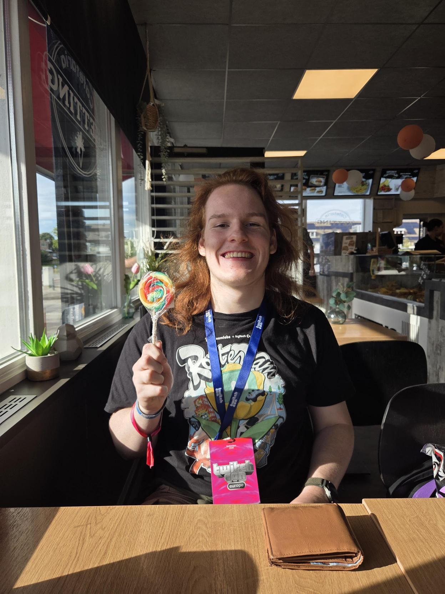
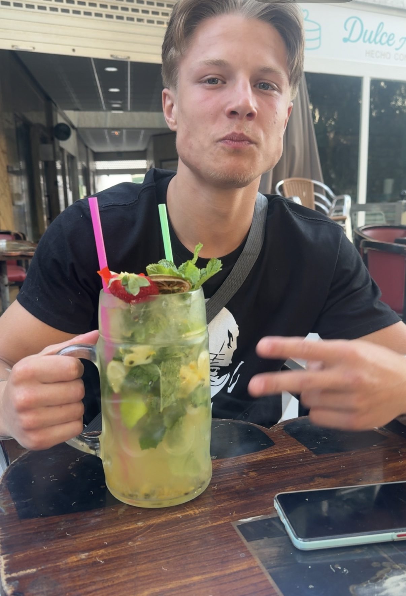
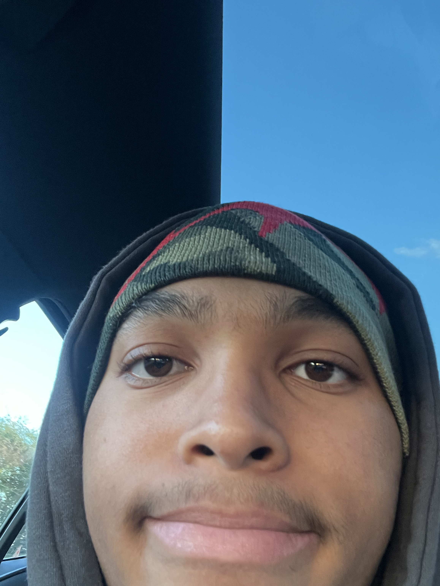

Waarom een scanner?
Aan het begin van de les kost het tijd om aanwezigheid te controleren. Dat is tijd die niet naar de les gaat. Wij willen dat sneller en eenvoudiger maken: de leerling scant zijn kaart of badge en klaar.
We bouwen een prototype met een Circuit Playground Express. Het ontwerp maken we zelf en we snijden het met de lasersnijder uit multiplex. Tijdens het bouwen testen we steeds of de scanner ook echt prettig werkt.
Meer weten over de onderdelen en de werking? Dat lees je op de productpagina.
Ons team
Vier mensen, vier taken. Zo kunnen we tegelijk aan verschillende onderdelen van de scanner werken en houden we overzicht.
James
Developer
James programmeert de scanner en zet het ontwerp om in een werkend prototype.
Dylan
Scrum Master
Dylan verdeelt de taken, bewaakt de planning en houdt bij hoe ver we zijn.

Finn
Developer
Finn werkt mee aan de code en de techniek van de scanner.

Taynn
Developer
Taynn werkt de scanner verder uit en let erop dat het prototype duidelijk en prettig te gebruiken is.
